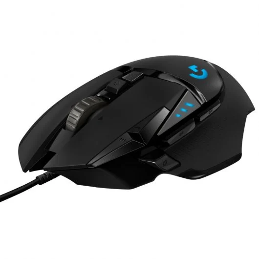
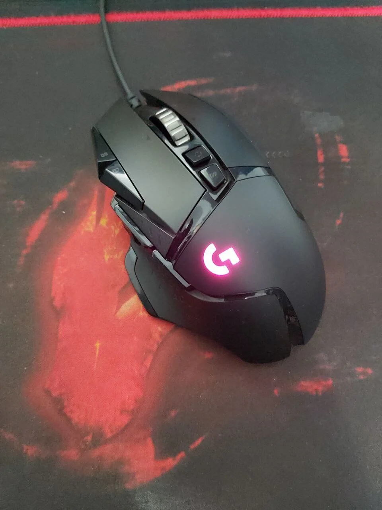
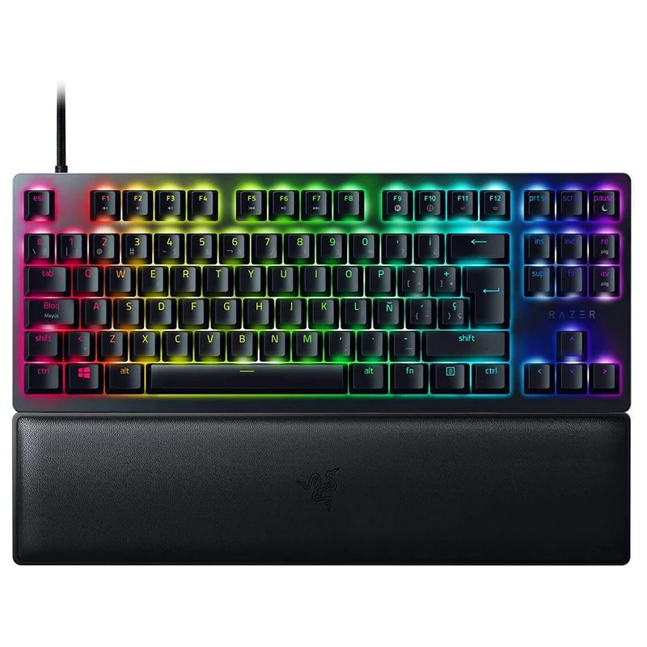
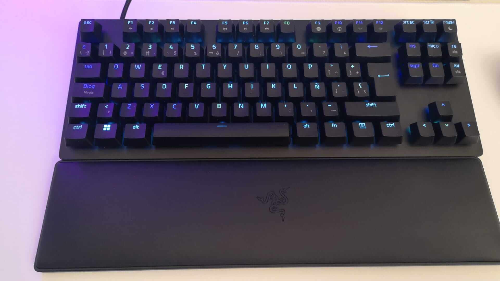

Sumérjase en la acción con los CORSAIR VOID RGB ELITE USB, equipados con transductores de audio de neodimio de 50 mm
de ajuste personalizado que ofrecen un sonido envolvente 7.1 en PC. Tela con rejilla de microfibra y las
almohadillas de espuma con memoria ofrecen una comodidad duradera. Un micrófono omnidireccional con indicador LED de
silencio garantiza que los demás jugadores le oirán con una claridad de voz excepcional.
Se le han realizado pruebas rigurosas y cuenta con el certificado Discord para una comunicación clara y un sonido excepcional.
El distintivo diseño de los VOID RGB ELITE USB y una construcción duradera se completan con una iluminación RGB
completamente personalizable en cada auricular.
El potente software CORSAIR iCUE une todo, brindando un control absoluto sobre los ajustes del ecualizador, el sonido
envolvente 7.1, la iluminación RGB y mucho más.
Características:
Sonido increíble. Escúchelo todo, desde la pisada más ligera hasta la explosión más atronadora,
gracias a los transductores de audio de neodimio de alta densidad de 50 mm de ajuste personalizado con un rango de
frecuencia ampliado de 20 Hz-30 000 Hz.
Comodidad duradera. Un tejido de rejilla de microfibra transpirable y las lujosas almohadillas de
espuma con memoria garantizan la comodidad en largas sesiones de juego.
Micrófono omnidireccional optimizado. Recoge la voz con una claridad excepcional, mientras que una
función de silenciado y un indicador LED de silenciado integrado le permiten saber cuándo le están oyendo y cuándo no.
Construcción duradera con diadema de aluminio. Diseñados para resistir a varios años de juego.
Sonido envolvente e inmersivo 7.1. Cree una experiencia de audio multicanal en PC para que siempre
esté en el medio de la acción.
Controles para volumen y silencio en auricular. Realice ajustes sobre la marcha sin distraerse del
juego.
Iluminación dinámica RGB. Personalice su aspecto con la iluminación RGB en cada auricular, con un
abanico casi ilimitado de colores y efectos.
Control inteligente, posibilidades ilimitadas. El software CORSAIR iCUE permite personalizar los
ajustes del ecualizador de sonido, disfrutar de un sonido envolvente e inmersivo 7.1, controlar el ruido local y
sincronizar la iluminación RGB con periféricos, refrigeradores, ventiladores y otros productos de CORSAIR
compatibles.
Certificado Discord. Para una comunicación nítida y un sonido extraordinario.
Especificaciones:
Requisitos del sistema:
Sistema operativo Windows soportado: Windows 10,Windows 7,Windows 8
Puertos e Interfaces:
Tecnología de conectividad: Alámbrico
Conector de 3,5 mm: No
Conector de 2,5 mm: No
Micrófono:
Sensibilidad de micrófono: -42 dB
Micrófono, impedancia de salida: 2000 Ohms
Tipo de dirección de micrófono: Omnidireccional
Auriculares:
Audifonos: Circumaural
Frecuencia de auricular: 20 - 20000 Hz
Obstrucción: 32000 Ohms
Sensibilidad de auricular: 116 dB
Subwoofer:
Diámetro del conductor del subwoofer: 5 cm
Diseño:
Estilo de uso: Diadema
Tipo de auricular: Binaural
Color del producto: Negro
Desempeño
Utilizar con: Consola de juegos y ordenadores
Video del producto:
Logitech: Logitech G502 Hero(Ratón Gaming)


Sobre el producto:
Tu ratón para gaming de alto rendimiento favorito ofrece más funciones y precisión que nunca. Personaliza la
iluminación RGB para que coincida con tu estilo y entorno o sincronízala con otros productos Logitech
G. El ratón para gaming de alto rendimiento G502 incluye nuestro sensor óptico HERO 16K de próxima
generación para máxima precisión y seguimiento superior.
Sea cual sea tu estilo de gaming, puedes ajustar G502 HERO fácilmente según tus requisitos de uso, con perfiles
personalizados para tus juegos, valores de sensibilidad entre 200 y 25.600 dpi y un sistema de cinco pesas de 3,6 g
que puedes combinar o intercambiar como quieras para conseguir la sensación y el equilibrio perfectos.
Características:
Sensor HERO: El sensor HERO de próxima generación ofrece un seguimiento de precisión de hasta 25.600 dpi, sin suavizado, aceleración ni filtros
11 botones programables: 11 botones programables y botón rueda con dos modos y desplazamiento superrápido que te dan un control totalmente personalizable de tu forma de jugar
Sistema de pesas ajustable: Se pueden usar hasta cinco pesas de 3,6 g para personalizar la configuración del peso y del equilibrio
Tecnología LIGHTSYNC: La tecnología Logitech G LIGHTSYNC proporciona iluminación RGB totalmente personalizable que también se sincroniza con tus juegos
Sistema de botones de tensión de resortes e interruptores mecánico: Los botones izquierdo y derecho del ratón tienen incorporado un sistema de tensión
Especificaciones:
Especificaciones físicas:
Altura: 132 mm
Anchura: 75 mm
Profundidad: 40 mm
Peso: 121 g, sólo ratón
Pesos adicionales opcionales: hasta 18 g (5 x 3,6 g)
Longitud de cable: 2,10 m
Seguimiento:
Sensor: HERO™
Resolución: 100 – 25.600 dpi
Sin suavizado/aceleración/filtros
Aceleración máx.: 40 G2Pruebas realizadas sobre alfombrilla de ratón Logitech G240 para gaming
Velocidad máx.: 400 ips3Pruebas realizadas sobre alfombrilla de ratón Logitech G240 para gaming
Respuesta:
Formato de datos USB: 16 bits/eje
Velocidad de respuesta USB: 1000 Hz (1 ms)
Microprocesador: 32 bits ARM
Durabilidad:
Botones principales: 50 millones de clics
Pies de PTFE: 250 km4Pruebas realizadas sobre alfombrilla de ratón Logitech G240 para gaming
Otras funciones:
Memoria integrada: 5 perfiles
RGB LIGHTSYNC: 1 zona
Requisitos:
Windows 7 o posteriores
macOS 10.11 o posterior
Chrome OS
Puerto USB
Conexión a Internet para Logitech Gaming Software (opcional)
Sin florituras. Todo rendimiento. La sensibilidad sin rival nunca ha sido tan estilizada. Descubre el Razer Huntsman
V2 TKL, un teclado óptico gaming sin teclado numérico con una acústica mejorada, una latencia de entrada
insignificante y más funciones avanzadas que ofrecen un diseño compacto con rendimiento de tamaño completo.


Características:
Switches ópticos Razer para un accionamiento a la velocidad de la luz.
Teclas de PBT de doble inyección para un acabado robusto y texturizado.
Espuma amortiguadora del sonido para un sonido de teclado mejorado.
Reposamuñecas ergonómico para las partidas más largas.
Cable tipo C desmontable para instalar y guardar tu teclado fácilmente.
Memoria híbrida local y almacenamiento en la nube para acceder a los ajustes personalizados estés donde estés.
Especificaciones:
Tipo de interruptor: Conmutador óptico lineal Razer
Sensación de tecla: Ligero e instantáneo
Tamaño: Tenkeyless (TKL)
Iluminación: Retroiluminación Razer Chroma RGB personalizable con 16,8 millones de opciones de color
Reposamuñecas: Sí
Memoria integrada: Almacenamiento integrado híbrido, hasta 5 perfiles de combinación de teclas
Teclas multimedia: Ninguna
Conectividad: Alámbrico, cable de fibra trenzada USB-C desmontable
Teclas: Razer Doubleshot PBT
Otros:
Vida útil de 100 millones de pulsaciones de teclas
Tecnología Razer™ HyperPolling con tasa de sondeo real de hasta 8000 Hz
Teclas totalmente programables con grabación de macros sobre la marcha